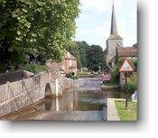
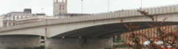

EYNSFORD

Some things we like to do in EYNSFORD:
Our little village is a busy place with plays, festivals, parades and fairs going on year round. There�s also a farmer�s market every Friday with local produce, flowers, bread, jam and crafts. We often go down to the river to play in the water, feed the wild swans or have a picnic. We also love going for picnics at our castle, an 11th century ruin. Other local historical points of interest include the Lullingstone Roman Villa (75AD), Lullingstone Castle (with its award winning World Garden) and Eagle Heights - a bird of prey center that teaches the ancient art of falconry. Down the road are acres of lavender fields that perfume the whole valley when they're in bloom. There are loads of country parks, walking trails and picturesque villages to visit nearby. Some of England's most beautiful castles are just a quick car journey away (Leeds, Bodium, Hever, Rocester, Dover etc.). There are lots of stately mansions, midieval manors, adorable cottages and amazing gardens open for visitor in the vicinity as well. We live fairly close to the 100 acre wood (from Winne the Pooh), the world famous Canterbury Cathedral and the family homes of Darwin, Rudyard Kipling, Charles Dickens and Winston Churchill.
Eysnford is just twenty miles from the very center of London.
Some things we like to do in LONDON:
We love going to the Theater:
Theatre Guide
Shakespeare's Globe Theatre
Some of our favorite historical sites:
Hampton Court Palace (w/ its hedge maze)
The Tower of London (where Henry VIII's wives were beheaded)
St. Paul's Cathedral (where the old lady in Mary Poppins feeds the birds)
Westminster Abbey(gorgeous architecture)
The Royal Residences (Buckingham Palace, Kensington Palace, Windsor Castle and others)
Some of our favorite Museums:
The Science Museum (Dakota's fav!) is very, very cool
The Natural History Museum (my favorite) is full things like dead animals, ant farms, dinosaur bones and meteorites. Whoo-hoo!
The British Museum is the world's oldest museum. It has everything the British looted during their imperial reign.
The National Gallery Van Gogh, Turner, Monet, Bellini and thousands more.
Victoria & Albert Museum is famous for its design, fashion and decoration.
Tate Britain has those beautiful chivalry paintings that Mom and I love.
Tate Modern is always good for a laugh.
The National Maritime Museum has everything nautical.
The Museum of London takes you through London's history.
The Imperial War Museum (another of Dakota's favs) is actually cooler than it sounds.
Some fun things to do:
Regent's Park is just plain gorgeous!
The London Zoo is a great day out.
The London Eye is a great way to get your bearings in the city.
Chinatown is great any time of year for food, shopping or just people watching.
The Notting Hill Carnival is a big Carribean festival in August with steel drum bands and yummy food.
Ascot is great because I get to wear a My Fair Lady hat.
We also love to walk along the south bank of the river Thames. Sometimes we hop on a boat and cruise down to Greenwich. For a bit more excitment we head over to Picadilly Circus or Leicester (pronounced 'Lester') Square because it's always buzzing there--morning, noon or night.
Our favorite marketplaces:
Covent Garden - where Eliza Doolittle sold flowers.
Portobello Road Market in Notting Hill is always an adventure.
And if we feel like exploring the dark side, gothic Camden Market is always an option.
Borough Market - Fun atmosphere on the South Bank. Some Harry Potter stuff was filmed there.
Some great places to eat:
Ye Olde Cheshire Cheese is a historic pub from the 16th century (rebuilt after the fire of 1666). It's delicious.
We like a ton of stuff in Chinatown - especially Mr Wu's
.
You can't go wrong with Harry Ramsdens for Fish 'n Chips.
Overrated things in & around London:
*London Bridge (it's actually very ugly and plain)

*The Ideal Home Show (don't bother)
*Legoland (outdoor theme parks just don't work in this climate)
Underrated things in & around London:
*The food is actually really good, despite what you've heard (especially Indian).
*The weather is not quite as bad as everyone says.
Our Favorite places OUT OF TOWN:
Both Stratford-upon-Avon (Ashland's aristocratic grandparent) and Oxford (the quaint university town) are located in the Cotswolds - a beautiful area famous for its picturesque villages.
Cornwall is fantastic with its sandy beaches, rolling countryside and yummy food (pasties, ice cream and clotted cream).
Scotland, especially Edinburgh and the Highlands, should not be missed. We love the lochs, the people and the deep-fat fried mars bars!
Wales is gorgeous.
The Lake District is beautiful and peaceful. It's also home to Beatrix Potter as well as the poets Wordsworth and Coleridge.
Cheddar (where the cheese comes from!)
Warwick Castle is one of the best places in England for kids to visit.
Dover has chalk cliffs, a castle and nice views of France (on a clear day).
Portmouth's harbor is full of historic ships you can tour like HMS Victory and The Mary Rose.